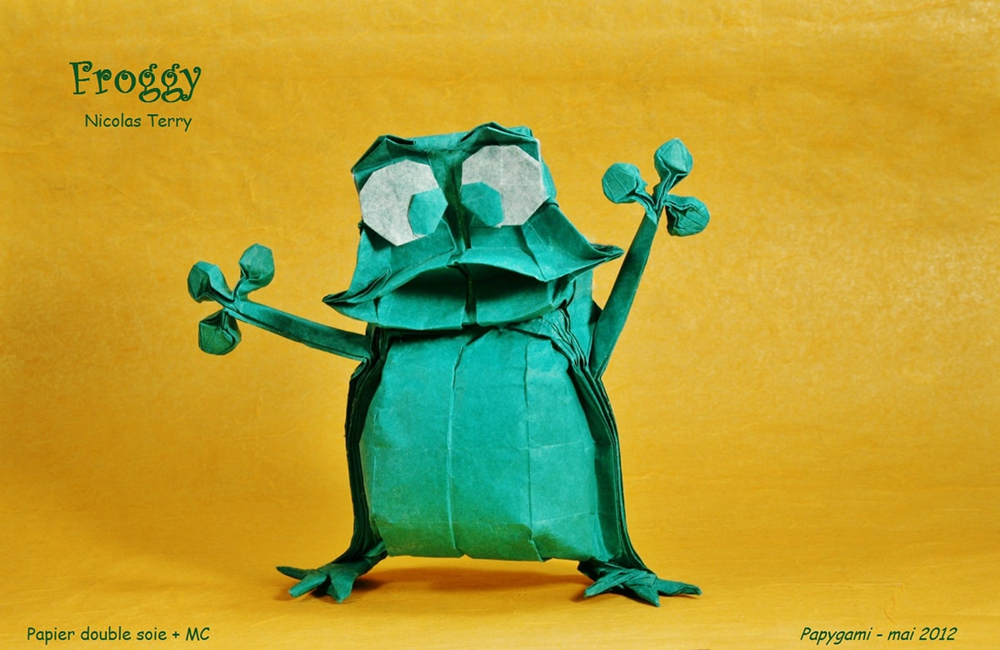

Interesting Facts about camel
- Camel's ears are furry
- Camel can move easily across the sand because of its specially designed feet
- When they find water, they drink as much as possible

Interesting Facts about chameleon
- Chameleons are reptiles that are a part of the iguana suborder
- Changing skin colour is an important part of communication among chameleons
- Most chameleons have a prehensile tail that they use to wrap around tree branches

Interesting Facts about pigeon
- Pigeons are incredibly complex and intelligent animals
- Pigeons are renowned for their outstanding navigational abilities
- Pigeons have excellent hearing abilities

Interesing facts about cicada
- Cicadas are found throughout the U.S. and many parts of the world
- Cicadas can live a relatively long time: 4 to 17 years, depending on whether they are annual or periodical cicadas. The periodical cicadas live the longest.

Interesting facts about Panda
- They have great camouflage for their environment
- Their eyes are different to normal bears.
- Cubs are well protected in their first month.

Interesting facts about Teddy Bear
- The term bear-hug was first recorded in 1846.
- The Teddy Bears' Picnic song was originally called The Teddy Bear Two Step.
- The Oxford English Dictionary dates the first use of the term teddy bear to 1906.

Interesting facts about Dogs
- Dogs noses are wet to help absorb scent chemicals.
- The Beatles song 'A Day in the Life' has a frequency only dogs can hear.
- Three dogs survived the Titanic sinking.

Interesting facts about Frogs
- There are over 4,700 species of frogs!!!
- Every year that a frog goes into hibernation, a new layer of bone forms.
- Frogs come in all sorts of colours.